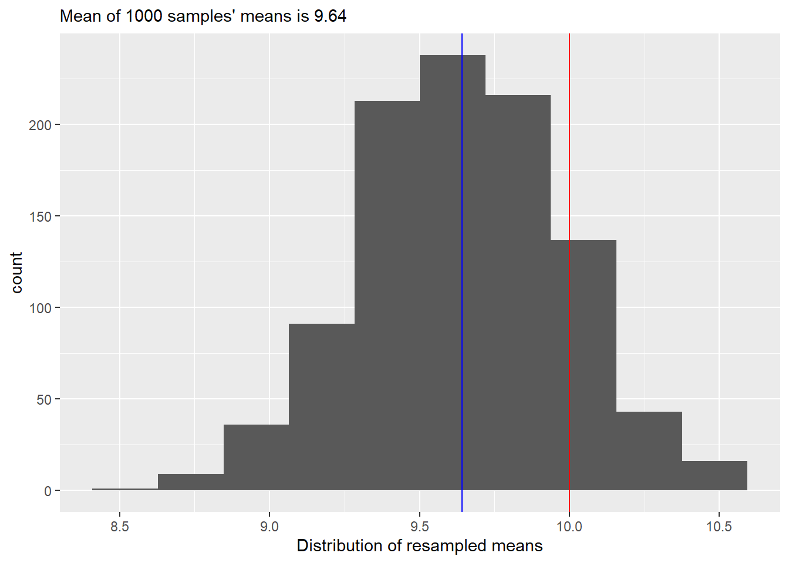

12 Sampling and simulations
An important trick in your toolbox is a skill to resample and simulate data. The latter, sampling from predefined distributions, allows you develop your analysis routine and ensure that it can correctly recover the anticipated effects even before you have collected the data and perform a power analysis. Resampling your data paves way for non-parametric bootstrapping and permutation testing that helps you whenever assumptions of parametric tests are violated or when you require an estimate that is not easy to derive analytically.
Grab exercise notebook before reading on.
12.1 Estimating mean of a normal distribution via resampling
Let us start very simple. Your task will be to generate samples from a normal distribution and then use resampling approach to estimate the original mean. Step one is simple, decide on mean and standard deviation of the normal distribution and generate 20 samples using rnorm() function (r<distribution functions generate random number based on distribution and its parameters). Check your results visually by plotting a histogram and adding a red vertical line to indicate the true mean of the distribution. We also need to see the difference between the true mean and the sample mean, so include a blue vertical line to indicate the sample mean. Finally, it is always nice to have both visual and textual information in the plots, so add information about the true mean, number of samples, and sample mean to the plot’s title. Run your code several times to appreciate variability of the data and, therefore, of the sample mean.
Your plot should look something like this (my number of set.seed is 1745).
Do exercise 1.
In the real life, we do not know the true mean which is why we need to collect the data to begin with. We also know that our sample mean is different from the true mean73 and we would like to know how much can we trust that value. In other words, we would like to know how much the sample mean would vary if we would draw some other samples from the same distribution. Theoretically, you want to draw samples from that “true” distribution directly. Practically, you do not have access to it, apart from replicating your experiment or study many times. Instead, you can make an educated guess about shape and parameters of this distribution. This is a parametric approach used to compute estimators analytically, e.g., from the Student t Distribution. This is the way it is done in the t.test().
t.test(samples, mu = 10)##
## One Sample t-test
##
## data: samples
## t = -1.1076, df = 19, p-value = 0.2819
## alternative hypothesis: true mean is not equal to 10
## 95 percent confidence interval:
## 8.911319 10.335209
## sample estimates:
## mean of x
## 9.623264The other approach is to assume that your sample and, therefore, the data you collected is representative, so frequency of individual values in your sample is proportional to the their probability, i.e., the more often you see a particular value, the more likely it is. In this case, sampling from the data is just like sampling from the true distribution. This is obviously a strong assumption, particularly for small samples, however, this approach can work with any data, regardless of its distribution, and can be used to estimate statistic that is not easy to derive analytically. Thus, below we will use a brute force approach that relies on sheer computer power to compute the same confidence interval as one analytically computed by the t-test through resampling of the data that you generated.
You will need three functions for this. First, the function that samples you data: sample(). It takes the original data (first parameter x) and randomly samples size items from it either with or without replacement (controlled by replace parameter that defaults to FALSE, so no replacement). In our case we want to get a sample of the size as the original data and we want to sample with replacement. With replacement means that once a value is drawn from the sample, it is recorded and then put back in, so it can be drawn again. With replacement procedure means that probability of drawing a particular value is always the same, whereas without replacement their probabilities change with every draw simply because there fewer and fewer values left to sample from.
For our purposes, we want to resample data and compute its mean. Write the code that does just that. Run the chunk several times to see how computed mean value changes due to resampling. As an exercise, set replace = FALSE and, before running the chunk, think what value do you expect and whether and how it would change when run the chunk again.
Do exercise 2.
Our resampling-and-computing-mean code is very simple and brief. However, it is generally a good idea to pack it into a function with a meaningful name. Do just that: turn the code of exercise 2 into a function (think about function parameters and what it should return) and call it to check that everything works (when you pass a sample to it, it should return a resampled mean for it).
Do exercise 3.
Our second step is to repeat our first step many (say, 1000) times. The base R function that helps you to do this is replicate(). That takes number of repetitions (first parameter n) and an arbitrary R code that returns a value (our step one). Once you run it, you will get a vector of 1000 means from resampled data. Plot the histogram, overlaying the true and average samples’ means (so mean of the means of samples, not a just a mean of all samples!) as a reference. Your plot should look like this

Our final step is to use quantile() function to compute 95% confidence interval. quantile() function takes a vector and computes a value that is greater than probs fraction of values in that vector. E.g., if probs=c(0.25, 0.75), it will return a two values, so that 25% of values are smaller than the first one and 75% of them are smaller than the second. Or, to put it differently, 50% of all values are with probs=c(0.25, 0.75). In our case, we want to compute 97%74 confidence interval, i.e., 97% of all values should be between the lower and upper confidence interval values. Once you run the code, you should see that 97% confidence interval from resampling is very similar to what the t-test reported (you want get the same values due to random sampling but they should also be close to the t-test’s analytic estimate). Add this information to the caption (often, this information is put directly into the text, but I find it simpler if all quantitative information is together and easy to find)
::: {.practice}
Do exercise 4.
:::
12.2 Repeating computation via for loop
As we discussed in the a chapter on loops and repetitions, whereas many ways to repeat a computation in R. Let’s replicate the sampling part of the code, using for loop. This is not the best way to perform our current task, but it is a safer approach if your computation is heavy and takes a long time, as it is easier to perform bookkeeping, retain data and restart the computation if something goes wrong (e.g., you run out of memory or file space), compared to functional programing via replicate or purrr, where you might need to start from scratch.
Think about how you will define number of iterations, whether you need to use the loop variable, how you concatenate new sample mean to the vector, etc.
Do exercise 5.
12.3 Repeating computation via purrr
Practice makes perfect, so let us replicate the code repeating via purrr library. Think about which map function is best for the job, whether you need to use the special . variable, etc.
Do exercise 6.
12.4 Bootstrapping via boot library
The approach that we used is called “bootstrapping” and R is all about giving you options, so it has a boot library to simplify and automate bootstrapping and the confidence interval computation. You do not need to install it (boot comes with base R) but you need to import it via library(boot).
The key function is boot(). It has plenty of parameters that allow you to fine tune its performance but the three key compulsory parameters are
-
data: your original data you want to use for bootstrapping. -
statistic: function(s) that compute desired statistic, such is mean in our case. -
R: the number of bootstrap replicates (we used 1000 when we did this by hand).
For non-parametric bootstrapping, like the one we used above, you will need to write the statistic function yourself even if you want to compute a statistic for which functions already exist, like mean or standard deviation. This is because statistic function must take at least two arguments: 1) the data that you passed and 2) how it should be resampled. By default, the second parameter will contain indexes of elements in the data. Note that bootstrap resamples with replacement, so the same index can appear more than once, i.e., the same element is drawn more than once (just as we did above).
Your statistic function should like as following, of course with a better name and an actual code inside.
your_statistic_function <- function(data, indexes){
# here you compute desired statistic subsetting data using indexes
}Once you have this function, you can bootstrap samples via
booted_samples <- boot(samples, statistic = your_statistic_function, R = 1000)Next, use function boot.ci() to compute the confidence interval, which takes your bootstrapped samples as a first parameter. You can also specify the confidence interval you are interested in (conf, defaults to 0.95 but we want 97!) and type of the confidence interval. The one we computed above is called percentile (type="perc"), so this is the type you should specify75. Once you run the code the output should be similar to that below.
## BOOTSTRAP CONFIDENCE INTERVAL CALCULATIONS
## Based on 1000 bootstrap replicates
##
## CALL :
## boot.ci(boot.out = booted_samples, type = "perc")
##
## Intervals :
## Level Percentile
## 95% ( 8.939, 10.242 )
## Calculations and Intervals on Original ScaleAs you can see, we very similar results as above (but for variation due to sampling). Thus, either approach will work but, in most cases, boot is more flexible solution (but do read on bootstrapping before using advanced options).
Do exercise 7.
12.5 Confidence about proportion of responses for Likert scale
We have looked at how one should present information on Likert scale responses a couple of times already. Let us return to it to see how you can compute not just a proportion of response level report, but also a percentile confidence interval for it, to see how reliable are these numbers. We will use a smaller file with just one scale — likert-scale.csv — and your first task is to reuse your old from chapter on factors but making sure that your counts are complete as we did in chapter on tidyr. Package the code that counts and computes proportions per condition and response level into a function. It should take a data frame with original data as the first input and a second parameter resample that should be FALSE by default (we will use it later). The function should return the summary table and you can reuse
that you can plot using the same code as in chapter on factors. Also, you can reuse you original code for reading and preprocessing the data, before it is used to compute counts and proportions. Your plot should look almost exactly as before but for zeros where uncounted response levels were not plotted previously.
Do exercise 8.
Modify your function so that if resample parameter is TRUE, it samples the entire table with replacement. The most suitable function for that is sample_frac() from dplyr, as you can easily specify the size of data as 1 (as many row as in the original table). Or you can use sample_n() but here you must specify the desired number of rows explicitly. Don’t forget about replacement! Test your updated function by calling it with resample = TRUE and checking that you get different averages every time.
Do exercise 9.
As with resampling the mean, now you need to repeat this many (1000, 2000) times over. Here, the prior approaches won’t do, as they expect a single number (statistic) whereas our function returns a table of them. Our solution would be to use map() function from purrr library and store these tables in a list that we can turn into a single table via list_rbind(). My suggestion would be to first program the list_of_tables <- map(...) part alone for just of couple iterations. Then you can check each table inside the list (remember how to use simplifying subsetting?) and if they look good and different, you can combine them via list_rbind(). Once you are sure that the computation works correctly, you can run it for more iterations to get more samples. Advice, read on .progress parameter of the map() as it makes waiting for the code to finish a bit less stressful.
Do exercise 10.
We are on the final stretch! Your table with bootstrapped counts and proportions contains many samples for each combination of condition and response level (e.g., 1000). Use quantile() function to compute lower and upper limits for the 97% confidence interval. Think about which dplyr verbs do you need for this. The table with confidence intervals should look like this (but for variability due to sampling).
| Condition | Response | LowerCI | UpperCI |
|---|---|---|---|
| game | Not at all true | 0.0000000 | 0.1791071 |
| game | Hardly true | 0.0000000 | 0.1785714 |
| game | Slightly true | 0.0000000 | 0.2500000 |
| game | Somewhat true | 0.0000000 | 0.1785714 |
| game | Mostly true | 0.0000000 | 0.2500000 |
| game | Almost completely true | 0.0000000 | 0.1071429 |
| game | Very true | 0.0000000 | 0.1071429 |
| experiment | Not at all true | 0.0000000 | 0.2142857 |
| experiment | Hardly true | 0.1071429 | 0.4648214 |
| experiment | Slightly true | 0.0000000 | 0.2500000 |
| experiment | Somewhat true | 0.0000000 | 0.1076786 |
| experiment | Mostly true | 0.0000000 | 0.0000000 |
| experiment | Almost completely true | 0.0000000 | 0.0000000 |
| experiment | Very true | 0.0000000 | 0.0000000 |
Do exercise 11.
The only thing left to do is to use this in combination with geom_ribbon() or geom_errorbar() to add 97% CIs to our original plot. Now you have two tables for a single plot and you have two ways to handle this. First, you can join them into a single table. Or, you can pass the table with CIs to the geom itself. In the latter case, you need to use explicit named parameter data = likert_CI (or whatever the name of your table is) as geoms in ggplot2 expect aesthetics as the first parameter. Also, your CIs table does not have the Probability column that you use as aesthetics for y and ggplot2 will complain. The solution is to set y to one of the limits, as it is not used in the geom itself and this will make no actual difference76.
Do exercise 12.
The procedure and the plot above are my preferred way of reporting Likert scale data. You can use other approaches but always keep in mind that this is ordinal data and should be treated as such, even if you label individual levels with numbers.